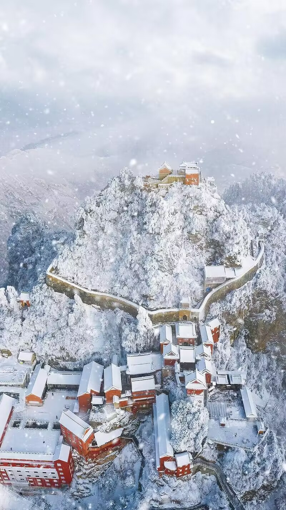

| 返回首页 | |
|---|---|
| 一年四季，无论哪个季节，你都可以亲身感受到武当山的神奇魅力。 春天的武当山，青峰滴翠，繁花似锦，百花争艳，山谷里弥漫着各种花香，仿佛走进了花的海洋。 夏日的武当山，是避暑的天堂，清凉的圣地。来到武当山，你会感到烦热顿消，凉爽无比，真可谓“踏入武当景远幽，六月炎夏变成秋”的清凉世界。 晨曦照耀下的武当山，云雾缭绕，宛如仙境一般，让人感叹大自然的神奇魅力。武当山的夜晚，星光璀璨，满天繁星点缀在苍穹之上，宛如银河倒挂在山间。武当山的群山更是层林尽染。 远处的山峦叠嶂，近处的山坡陡峭，山间的小溪潺潺流淌，山水相映成趣。此时，山间的鸟儿在枝头欢唱，为这秋天的画卷增添了生机与活力。 而在这层林尽染的群山之中，还隐藏着那恢宏壮美的宫观。这些古老的建筑见证了武当山的历史和文化，也是中华传统文化的瑰宝。宫观的红墙黄瓦在秋天的阳光下显得格外醒目，与山间的景色交相辉映，构成了一幅独特的人间仙境。 |
|
|  | 有人曾这样形容武当，一下雪就美成了玄岳。 雾气缠绕着群山峻岭，走进寂静无言的武当深山，就走进一个江湖梦境。 武当一落雪，便成了人间仙山。峰落琼瑶，林挂玉带。顷刻间梨花换了翠微，携一程风雪入山。这个冬天来武当，裹挟着人间烟火，奔赴一场冬雪，解锁不一样的冬日旅行。 金顶，天空中也飘下了片片雪花。冰雕玉砌、雪花满枝头，把游客们带入了冰雪世界。雪花纷纷飘落，远远望去群山被一片雪白覆盖，山上植被、建筑在白雪的包裹下显得唯美神奇。 在这里，还可以领略到中国古老的道教文化与美丽的雪景相互交融的独特魅力。 |